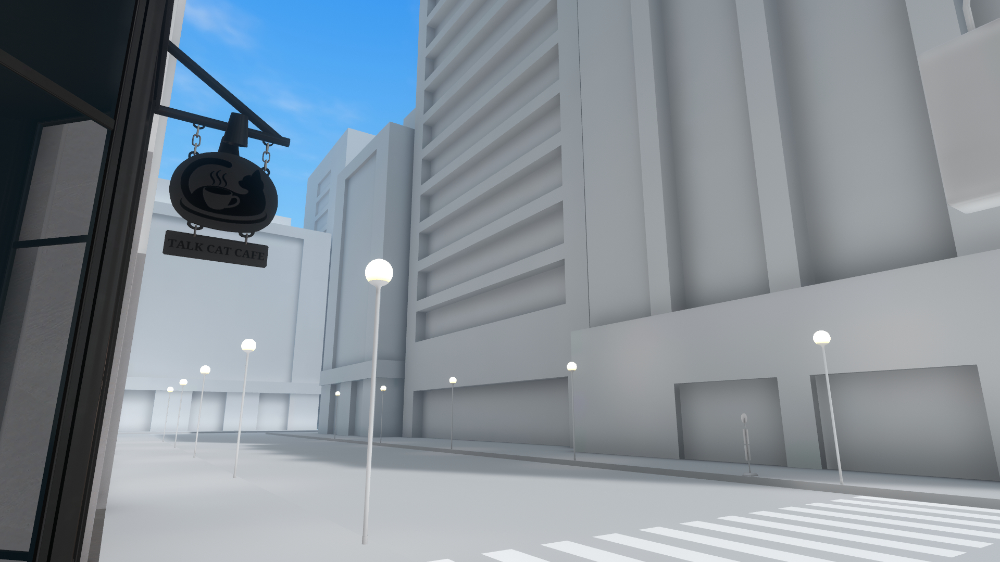

コンセプト
「喋る猫カフェ」は現代を舞台にした、二足歩行の人語が理解でき喋ることが出来る猫が働くカフェという想定のロールプレイ重視イベントです。
人間社会に溶け込む奇妙な猫たちの接客を、等身大で楽しんでいただけることを目標としています。
次回開催：お知らせをご確認ください

Concept
高層ビルに囲まれたそこそこの繁華街の交差点に、ふと現れたとあるカフェ
ネットやテレビには取り上げられないが、まことしやかにこんな噂が立っていた
「あそこは猫が接客してくれるらしい」
「喋る猫カフェ」は現代を舞台にした、二足歩行の人語が理解でき喋ることが出来る猫が働くカフェという想定のロールプレイ重視イベントです。
人間社会に溶け込む奇妙な猫たちの接客を、等身大で楽しんでいただけることを目標としています。
1950年頃から「生まれた猫が二足歩行している」という奇妙な報告が世界中で相次ぎ、更に数年経つと人語を理解する猫まで現れ始め、世界中が混乱に陥りました。
最初は普通の猫と同様の扱いをしていたのですが、増え続ける人語を理解するモノたちにより新たなコミュニティが形成され、人間と同等の営みを行いそれが必要とされていることが人と猫との共同研究ではっきりしました。
そんな二足歩行の喋る猫は世界中で5万匹以上確認されたことにより、地球に存在する新たな知的生命体として2000年頃に「猫族」という呼称と基本的人権を獲得しました。
現在でもまだ差別や違和感などが残っていますが、社会的にも受け入れられ始めています。
こんなことは人間と同じ暮らしをしています。
・希望するモノは小学校や中学校に通うことが出来ます
・コーヒーや玉ねぎなど、本来猫が食べられないものが食べられます（個体差あり）
逆に人とはこんなところが違います。
・歳の数え方や成長スピードが違います
・風邪をひいたら動物病院に行きます
当イベントはロールプレイ重視のカフェイベントです。
ご来店いただくお客様にも世界観を守っていただくためルールの順守にご協力ください。
・必ず人間のアバターでお越しいただくこと
・世界観を尊重した言動
・無銭飲食・注文を伴わない居座り等の禁止
その他、参加に関する規約を必ず確認いただきご来店のご検討をお願いします。